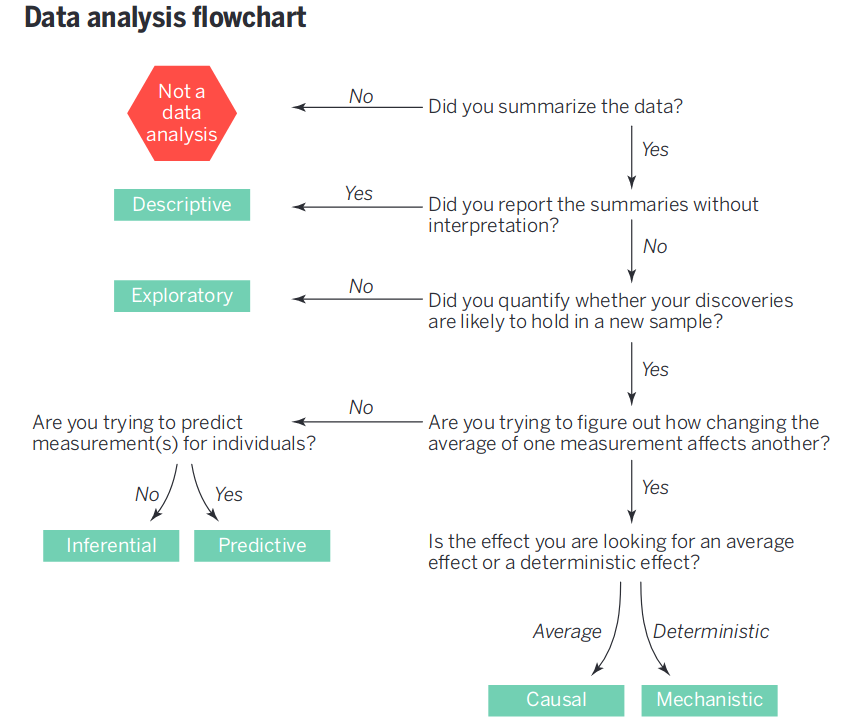
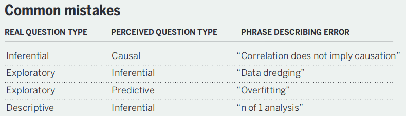

flowchart TD CR[Clinically Relevant Status<br>And Event Severities<br>Assessed Daily] S[Statistical Analysis<br>Based On<br>Raw Data] Pow[Power Comes From<br>Breaking Ties in Outcomes:<br>Make Outcome Resemble a<br>Longitudinal Continuous Response] O[Estimation of Clinical<br>Quantities of Interest] E["Examples:<br>P(State y or Worse)<br>As a Function of<br>Time and Treatment<br><br>Mean Time in State(s) e.g.<br>Mean Days Unwell<br>(includes death & hospitalization)"] CR --> O S --> O S --> Pow O --> E --> R[Clinical Relevance<br>and<br>High Power]
3 General Overview of Biostatistics
flowchart TD Q[Research Question] --> Ex[Design] --> M[Measurements] --> A[Analysis] A --> Des[Descriptive] & F[Formal] Des --> Dis[Raw Data Plots<br>Graphical Trends<br>Descriptive Statistics] F --> Freq[Frequentist] --> FH[Form Formal<br>Hypothesis] --> I[Compute Measure of<br>Surprising Data If<br>Hypothesis Is True] --> II[Indirect Inference] F --> B[Bayesian] --> As["Make Series<br>Of Assertions<br>(Similarily, Superiority,<br>Clinically Important<br>Superiority, etc.)"] --> Prior[Quantify Prior Evidence<br>Or General Skepticism] --> I2[Compute<br>Probability That Each<br>Assertion is True] --> Dec[Decision] A --> Pred[Prediction] --> PredA[Bayesian<br>Frequentist<br>Machine Learning] PredA --> MD[Model Development<br>Based on Sound<br>Principles] --> V[Unbiased Model<br>Validation]
ABD 1.1,p.23-4


There are no routine statistical questions, only questionable statistical routines.
— Sir David R. Cox
It’s much easier to get a result than it is to get an answer.
— Christie Aschwanden, FiveThirtyEight
3.1 What is Biostatistics?
- Statistics applied to biomedical problems
- Decision making in the face of uncertainty or variability
- Design and analysis of experiments; detective work in observational studies (in epidemiology, outcomes research, etc.)
- Attempt to remove bias or find alternative explanations to those posited by researchers with vested interests
- Experimental design, measurement, description, statistical graphics, data analysis, inference, prediction
To optimize its value, biostatistics needs to be fully integrated into biomedical research and we must recognize that experimental design and execution (e.g., randomization and masking) are all important.
See I’m not a real statistician, and you can be one too by Darren Dahly for an exellent article about learning biostatistics.
3.1.1 Branches of Statistics
- Frequentist (traditional)
- Bayesian
- Likelihoodist (a bit like Bayes without priors)
See Section 5.3
3.1.2 Fundamental Principles of Statistics
- Use methods grounded in theory or extensive simulation
- Understand uncertainty
- Design experiments to maximize information and understand sources of variability
- Use all information in data during analysis
- Use discovery and estimation procedures not likely to claim that noise is signal
- Strive for optimal quantification of evidence about effects
- Give decision makers the inputs (other than the utility function1) that optimize decisions
Not directly actionable: probabilities that condition on the future to predict the past/present, i.e, those conditioning on the unknown
- sensitivity and specificity (\(\Pr(\text{test result} | \text{disease status})\))
Sensitivity irrelevant once it is known that the test is + - \(p\)-values (condition on effect being zero)
- sensitivity and specificity (\(\Pr(\text{test result} | \text{disease status})\))
- Present information in ways that are intuitive, maximize information content, and are correctly perceived
1 The utility function is also called the loss or cost function. It specifies, for example, the damage done by making various decisions such as treating patients who don’t have the disease or failing to treat those who do. The optimum Bayes decision is the one that minimizes expected loss. This decision conditions on full information and uses for example predicted risk rather than whether or not the predicted risk is high.
3.2 What Can Statistics Do?
- Refine measurements
- Experimental design
- Make sure design answers the question
- Take into account sources of variability
- Identify sources of bias
- Developing sequential or adaptive designs
- Avoid wasting subjects
- (in strong collaboration with epidemiologists) Observational study design
- (in strong collaboration with epidemiologists and philosophers) Causal inference
- Use methods that preserve all relevant information in data
- Robust analysis optimizing power, minimizing assumptions
- Estimating magnitude of effects
- Estimating shapes of effects of continuous predictors
- Quantifying causal evidence for effects if the design is appropriate
- Adjusting for confounders
- Properly model effect modification (interaction) / heterogeneity of treatment effect
- Developing and validating predictive models
- Choosing optimum measures of predictive accuracy
- Quantify information added by new measurements / medical tests
- Handling missing data or measurements below detection limits
- Risk-adjusted scorecards (e.g., health provider profiling)
- Visual presentation of results taken into account graphical perception
- Finding alternate explanations for observed phenomena
- Foster reproducible research
3.2.1 Benefits of Biostatistics to Basic Science
Examples Where Biostatistical Expertise Changes The Results
- Inappropriate experimental design wasted animals or answered the wrong question
- Assuming linearity of effects caused in a loss of power or precision
- Improper transformation of a response variable (e.g., using percent change) caused results to be uninterpretable
- Apparent interaction between factors (effect modification; synergy) was due to inappropriate transformations of main effects
- Apparent effect of an interaction of two genes was explained by the main effects of three omitted genes
- Failure to fully adjust for confounders gave rise to misleading associations with the variable of interest
- Having no yield from an experiment was predictable beforehand from statistical principles
- An aggressive analysis of a large number of candidate genes, proteins, or voxels, failing to build a “grain of salt” into the statistical approach, resulted in non-reproducible findings or overstated effects/associations
- Dichotomizing a continuous measurement resulted in unexplained heterogeneity of response and tremendous loss of power, effectively resulting in discarding 2/3 of the experiment’s subjects
- Use of out-of-date statistical methods resulted in low predictive accuracy and large unexplained variation
- Removal of “outliers” biased the final results
- Treating measurements below the limit of detection as if they were actual measurements in the analysis caused results to be arbitrary
- Misinterpreting “P > 0.05” as demonstrating the absence of an effect
Example Questions Biostatistics Can Answer
- What does percent change really assume?
- Why did taking logarithms get rid of high outliers but create low outliers?
- What is the optimum transformation of my variables?
- What statistical method can validly deal with values below the detection limit?
- Do I need more mice or more serial measurements per mouse?
- What’s the best way to analyze multiple measurements per mouse?
Experimental Design
- Identifying sources of bias: biostatistics can assist in identifying sources of bias that may make results of experiments difficult to interpret, such as
- litter effects: correlations of responses of animals from the same litter may reduce the effective sample size of the experiment
- order effects: results may change over time due to subtle animal selection biases, experimenter fatigue, or refinements in measurement techniques
- experimental condition effects: laboratory conditions (e.g., temperature) that are not constant over the duration of a long experiment may need to be accounted for in the design (through randomization) or in the analysis
- optimizing measurements: sometimes optimizing measurements (e.g., changing pattern recognition criteria or image analysis parameters) may result in techniques that are too tailored to the current experiment
- Selecting an experimental design: taking into account the goals and limitations of the experiment to select an optimum design such as a parallel group concurrent control design vs. pre-post vs. crossover design; factorial designs to simultaneously study two or more experimental manipulations; randomized block designs to account for different background experimental conditions; choosing between more animals or more serial measurements per animal. Accounting for carryover effects in crossover designs.
- Estimating required sample size: computing an adequate sample size based on the experimental design chosen and the inherent between-animal variability of measurements. Sample size can be chosen to achieve a given sensitivity to detect an effect (power) or to achieve a given precision (“margin of error”) of final effect estimates. Choosing an adequate sample size will make the experiment informative.
- Justifying a given sample size: when budgetary contraints alone dictate the sample size, one can compute the power or precision that is likely to result from the experiment. If the estimated precision is too low, the experimenter may decide to save resources for another time.
- Making optimum use of animals or human specimens: choosing an experimental design that results in sacrificing the minimum number of animals or acquiring the least amount of human blood or biopsies; setting up a factorial design to get two or more experiments out of one group of animals; determining whether control animals from an older experiment can be used for a new experiment or developing a statistical adjustment that may allow such recycling of old data.
- Developing sequential designs: allowing the ultimate sample size to be a main quantity to be estimated as the study unfolds. Results can be updated as more animals are studied, especially when prior data for estimating an adequate sample size are unavailable. In some cases, experiments may be terminated earlier than planned when results are definitive or further experimentation is deemed futile.
- Taking number of variables into account: safeguarding against analyzing a large number of variables from a small number of animals.
Data Analysis
- Choosing robust methods: avoid making difficult-to-test assumptions; using methods that do not assume the raw data to be normally distributed; using methods that are not greatly effected by “outliers” so that one is not tempted to remove such observations from the analysis. Account for censored or truncated data such as measurements below the lower limit of detectability of an assay.
- Using powerful methods: using analytic methods that get the most out of the data
- Computing proper P-values and confidence limits: these should take the experimental design into account and use the most accurate probability distributions
- Proper analysis of serial data: when each animal is measurement multiple times, the responses are correlated. This correlation pattern must be taken into account to achieve accurate P-values and confidence intervals. Ordinary techniques such as two-way analysis of variance are not appropriate in this situation. In the last five years there has been an explosion of statistical techniques for analyzing serial data.
- Analysis of gene expression data: this requires specialized techniques that often involve special multivariate dimensionality reduction and visualization techniques; attention to various components of error is needed.
- Dose-response characterizations: estimating entire dose-response curves when possible, to avoid multiple comparison problems that result from running a separate statistical test at each dose.
- Time-response characterizations: use flexible curve-fitting techniques while preserving statistical properties, to estimate an entire time-response profile when each animal is measured serially. As with dose-response analysis this avoids inflation of type I error that results when differences in experimental groups are tested separately at each time point.
- Statistical modeling: development of response models that account for multiple variables simultaneously (e.g., dose, time, laboratory conditions, multivariate regulation of cytokines, polymorphisms related to drug response); analysis of covariance taking important sources of animal heterogeneity into account to gain precision and power compared to ordinary unadjusted analyses such as ANOVA. Statistical models can also account for uncontrolled confounding.
Reporting and Graphics
- Statistical sections: writing statistical sections for peer-reviewed articles, to describe the experimental design and how the data were analyzed.
- Statistical reports: writing statistical reports and composing tables of summary statistics for investigators
- Statistical graphics: use many of the state-of-the-art graphical techniques for reporting experimental data that are described in The Elements of Graphing Data by Bill Cleveland, as well as using other high-information high-readability statistical graphics. Translate tables into more easily read graphics.
Data Management, Archiving, and Reproducible Analysis
- Data management: the biostatistics core can develop computerized data collection instruments with quality control checking; primary data can be quickly converted to analytic files for use by statistical packages. Gene chip data will be managed using relational database software that can efficiently handle very large databases.
- Data archiving and cataloging: upon request we can archive experimental data in perpetuity in formats that will be accessible even when software changes; data can be cataloged so as to be easily found in the future. This allows control data from previous studies to be searched. Gene chip data will be archived in an efficient storage format.
- Data security: access to unpublished data can be made secure.
- Program archiving: the biostatistics core conducts all statistical analyses by developing programs or scripts that can easily be re-run in the future (e.g., on similar new data or on corrected data). These scripts document exactly how analyses were done and allow analyses to be reproducible. These scripts are archived and cataloged.
See Hackam DG, Redelmeier DA. Translation of research evidence from animals to humans, JAMA 296:1731-1732; 2006 for a review of basic science literature that documents systemic methodologic shortcomings. In a personal communication on 20Oct06 the authors reported that they found a few more biostatistical problems that could not make it into the JAMA article (for space constraints).
- none of the articles contained a sample size calculation
- none of the articles identified a primary outcome measure
- none of the articles mentioned whether they tested assumptions or did distributional testing (though a few used non-parametric tests)
- most articles had more than 30 endpoints (but few adjusted for multiplicity, as noted in the article)
3.2.2 Statistical Scientific Method
- Statistics is not a bag of tools and math formulas but an evidence-based way of thinking
- It is all important to
- understand the problem
- properly frame the question to address it
- understand and optimize the measurements
- understand sources of variability
- much more
- MacKay & Oldford (2000) developed a 5-stage representation of the statistical method applied to scientific investigation: Problem, Plan, Data, Analysis, Conclusion having the elements below:
flowchart TD Prob[Problem] --> Pr1["Units & Target Population (Process)"] --> Pr2["Response Variate(s)"] --> Pr3[Explanatory Variates] --> Pr4["Population Attribute(s)"] --> Pr5["Problem Aspect(s) -<br>causative, descriptive, predictive"] Plan[Plan] --> P1["Study Population<br>(Process)<br>(Units, Variates, Attributes)"] --> P2["Selecting the response variate(s)"] --> P3[Dealing with explanatory variates] --> P4[Sampling Protocol] --> P5[Measuring process] --> P6[Data Collection Protocol] Data[Data] --> D1[Excecute the Plan and<br>record all departures] --> D2[Data Monitoring] --> D3[Data Examination<br>for internal consistency] --> D4[Data storage] Analysis[Analysis] --> A1[Data Summary<br>numerical and graphical] --> A2[Model construction<br>build, fit, criticize cycle] --> A3[Formal analysis] Con[Conclusion] --> C1[Synthesis<br>plain language, effective<br>presentation graphics] --> C2[Limitations of study<br>discussion of potential errors]
Recommended Reading for Experimental Design
Glass (2014), Ruxton, Graeme D. & Colegrave, Nick (2017), and Chang (2016)
Recommended Reading for Clinical Study Design
- Hulley et al. (2013)
- The Effect: An Introduction to Research Design and Causality by Nick Huntington-Klein
- Marion Campbell’s tweetorial
- Toader et al paper on using healthcare systems data for outcomes in clinical trials
Recommended Reading for Pilot and Feasibility Studies
Teresi et al. (2022)
Design, Analyze, Communicate - a major resource that includes open source clinical trial simulation tools and an approach to avoiding futile clinical trials
Pointers for Observational Study Design
- Understand the problem and formulate a pertinent question
- Figure out and be able to defend observation periods and “time zero”
- Carefully define subject inclusion/exclusion criteria
- Determine which measurements are required for answering the question while accounting for alternative explanations. Do this before examining existing datasets so as to not rationalize data inadequacies (data availability bias).
- Collect these measurements or verify that an already existing dataset contains all of them
- Make sure that the measurements are not missing too often and that measurement error is under control. This is even slightly more important for inclusion/exclusion criteria.
- Make sure the use of observational data respects causal pathways. For example don’t use outcome/response/late-developing medical complications as if they were independent variables.
Paul Dorian wrote an excellent summary of the pitfalls of observational treatment comparisons.
3.3 Types of Data Analysis and Inference
- Description: what happened to past patients
- Inference from specific (a sample) to general (a population)
- Hypothesis testing: test a hypothesis about population or long-run effects
- Estimation: approximate a population or long term average quantity
- Bayesian inference
- Data may not be a sample from a population
- May be impossible to obtain another sample
- Seeks knowledge of hidden process generating this sample (generalization of inference to population)
- Prediction: predict the responses of other patients like yours based on analysis of patterns of responses in your patients
Leek & Peng (2015) created a nice data analysis flowchart.

They also have a succinct summary of common statistical mistakes originating from a failure to match the question with the analysis.

3.4 Types of Measurements by Their Role in the Study
ABD 1.3
- Response variable (clinical endpoint, final lab measurements, etc.)
- Independent variable (predictor or descriptor variable) — something measured when a patient begins to be studied, before the response; often not controllable by investigator, e.g. sex, weight, height, smoking history
- Adjustment variable (confounder) — a variable not of major interest but one needing accounting for because it explains an apparent effect of a variable of major interest or because it describes heterogeneity in severity of risk factors across patients
- Experimental variable, e.g. the treatment or dose to which a patient is randomized; this is an independent variable under the control of the researcher
Common alternatives for describing independent and response variables
| Response variable | Independent variable |
|---|---|
| Outcome variable | Exposure variable |
| Dependent variable | Predictor variable |
| \(y\)-variables | \(x\)-variable |
| Case-control group | Risk factor |
| Explanatory variable |
3.4.1 Proper Response Variables
It is too often the case that researchers concoct response variables \(Y\) in such a way that makes the variables seem to be easy to interpret, but which contain several hidden problems:
- \(Y\) may be a categorization/dichotomization of an underlying continuous response variable. The cutpoint used for the dichotomization is never consistent with data (see Figure 18.2) is arbitrary (see Figure 18.3), and causes a huge loss of statistical information and power (see Figure 18.4)
- \(Y\) may be based on a change in a subject’s condition whereas what is truly important is the subject’s most recent condition (see Section 14.4.4).
- \(Y\) may be based on change when the underlying variable is not monotonically related to the ultimate outcome, indicating that positive change is good for some subjects and bad for others (see ?fig-change-suppcr). A proper response variable that optimizes power is one that
- Captures the underlying structure or process
- Has low measurement error
- Has the highest resolution available, e.g.
- is continuous if the underlying measurement is continuous
- is ordinal with several categories if the underlying measurement is ordinal
- is binary only if the underlying process is truly all-or-nothing
- Has the same interpretation for every type of subject, and especially has a direction such that higher values are always good or always bad
A clinical trial’s primary outcome measure should have the following attributes2: it
2 Thanks to Dan Rubin of FDA CDER Office of Biostatistics for valuable input
- gives credit to a treatment for good outcomes that matter to patients
- penalizes a treatment when the treatment causes serious adverse outcomes
- has as few tied values as possible; the more continuous the measure the higher the statistical power and the lower the sample size
- is measured over the relevant clinical time course
- does not have its interpretation clouded by rescue therapy or intervening events
- is interpretable to clinicians
- is sensitive for detecting treatment effects
- captures the main aspects of feeling/function/survival for the disease
- allows for simple and complete data capture while handling partially available data with minimal hidden assumptions
Analysis should stay close to the raw data in order to maximize power and minimize problems with missing data. Recognize that having a specific clinical quantity of interest in mind does not imply that raw data be reduced to that measure, but instead that an efficient analysis of raw data have its results stated in various clinically relevant ways, as depicted in the following diagram.
Clinical Relevance is Achieved by Estimation of Quantities of Interest After Analyzing Raw Data
Not From Reducing Raw Data to Quantities of Interest
Use many one-number summaries from a longitudinal current status analysis; don’t use one-number summaries of raw data (e.g., time to recovery)
A simple example of this principle is systolic blood pressure (SBP) as a response variable in a single-arm study.
- Clinical target may be reducing SBP to < 140mmHg
- Don’t dichotomize SBP raw data at 140
- Suppose mean SBP after treatment is 130mmHg and SD 10mmHg
- Estimate of P(SBP < 140) = normal cumulative distribution function evaluated at \(\frac{140 - 130}{10}\) = \(\Phi(\frac{140 -130}{10})\) = \(\Phi(1)\)
- P(SBP < 140) = 0.84
- Precision of \(\Phi(1)\) is higher than proportion of patients with SBP < 140
- accounts for close calls etc.
- Leads to much higher-powered treatment comparison on SBP
- Parallel-group design can estimate P(SBP < 140 | treatment) without assuming a normal distribution3
3 For example one may use a semiprametric proportional odds ordinal logistic regression model that makes no assumption about the shape of the distribution for any one treatment arm. This is a generalization of the Wilcoxon test.
One-number summaries of non-trivial raw data result in loss of power, and surprisingly, cloud clinical interpretations. Examples:
- Time to recovery (TTR) in COVID-19
- deaths are treated the same as non-recovery
- a non-recovered patient who requires a ventilator is analyzed the same as a non-recovered patient who has a persistent cough and did not even need hospitalization
- gaps in data collection make it impossible to determine TTR for a patient
- “unrecoveries” after a patient is classified as having recovered are ignored
- “close calls” to recovery are ignored
- Ventilator-free days (VFD) in intensive care medicine resource
- difficulty in placing death on the scale
- no easy way to summarize the one-number summaries
- too many ties for median VFD to work
- the mean cannot be computed because death makes the scale a non-interval scale
- can’t handle data collection gaps
3.5 Types of Measurements According to Coding
ABD 1.3
- Binary: yes/no, present/absent
- Categorical (aka nominal, polytomous, discrete, multinomial): more than 2 values that are not necessarily in special order
- Ordinal: a categorical variable whose possible values are in a special order, e.g., by severity of symptom or disease; spacing between categories is not assumed to be useful
- Ordinal variables that are not continuous often have heavy ties at one or more values requiring the use of statistical methods that allow for strange distributions and handle ties well
- Continuous are also ordinal but ordinal variables may or may not be continuous
- Count: a discrete variable that (in theory) has no upper limit, e.g. the number of ER visits in a day, the number of traffic accidents in a month
- Continuous: a numeric variable having many possible values representing an underlying spectrum
- Continuous variables have the most statistical information (assuming the raw values are used in the data analysis) and are usually the easiest to standardize across hospitals
- Turning continuous variables into categories by using intervals of values is arbitrary and requires more patients to yield the same statistical information (precision or power)
- Errors are not reduced by categorization unless that’s the only way to get a subject to answer the question (e.g., income4)
4 But note how the Census Bureau tries to maximize the information collected. They first ask for income in dollars. Subjects refusing to answer are asked to choose from among 10 or 20 categories. Those not checking a category are asked to choose from fewer categories.
3.6 Choose \(Y\) to Maximize Statistical Information, Power, and Interpretability
The outcome (dependent) variable \(Y\) should be a high-information measurement that is relevant to the subject at hand. The information provided by an analysis, and statistical power and precision, are strongly influenced by characteristics of \(Y\) in addition to the effective sample size.
- Noisy \(Y \rightarrow\) variance \(\uparrow\), effect of interest \(\downarrow\)
- Low information content/resolution also \(\rightarrow\) power \(\downarrow\)
- Minimum information \(Y\): binary outcome
- Maximum information \(Y\): continuous response with almost no measurement error
- Example: measure systolic blood pressure (SBP) well and average 5 readings
- Intermediate: ordinal \(Y\) with a few well-populated levels
- Exploration of power vs. number of ordinal \(Y\) levels and degree of balance in frequencies of levels: fharrell.com/post/ordinal-info
- See Section 5.12.4 for examples of ordinal outcome scales and interpretation of results
3.6.1 Information Content
- Binary \(Y\): 1 bit
- all–or–nothing
- no gray zone, close calls
- often arbitrary
- SBP: \(\approx\) 5 bits
- range 50-250mmHg (7 bits)
- accurate to nearest 4mmHg (2 bits)
- Time to binary event: if proportion of subjects having event is small, is effectively a binary endpoint
- becomes truly continuous and yields high power if proportion with events much greater than \(\frac{1}{2}\), if time to event is clinically meaningful
- if there are multiple events, or you pool events of different severities, time to first event loses information
3.6.2 Dichotomization
Never Dichotomize Continuous or Ordinal \(Y\)
- Statistically optimum cutpoint is at the unknown population median
- power loss is still huge
- If you cut at say 2 SDs from the population median, the loss of power can be massive, i.e., may have to increase sample size \(\times 4\)
- See Section 18.3.4 and Section 18.7
- Avoid “responder analysis” (see datamethods.org/t/responder-analysis-loser-x-4)
- Serious ethical issues
- Dumbing-down \(Y\) in the quest for clinical interpretability is a mistake. Example:
Mean reduction in SBP 7mmHg \([2.5, 11.4]\) for B:A
Proportion of pts achieving 10mmHg SBP reduction: A:0.31, B:0.41
- Is the difference between 0.31 and 0.41 clinically significant?
- No information about reductions \(> 10\) mmHg
- Can always restate optimum analysis results in other clinical metrics
3.6.3 Change from Baseline
Never use change from baseline as \(Y\)
- Affected by measurement error, regression to the mean
- Assumes
- you collected a second post-qualification baseline if the variable is part of inclusion/exclusion criteria
- variable perfectly transformed so that subtraction works
- post value linearly related to pre
- slope of pre on post is near 1.0
- no floor or ceiling effects
- \(Y\) is interval-scaled
- Appropriate analysis (\(T\)=treatment)
\(Y = \alpha + \beta_{1}\times T + \beta_{2} \times Y_{0}\)
Easy to also allow nonlinear function of \(Y_{0}\)
Also works well for ordinal \(Y\) using a semiparametric model - See Section 14.4 and Chapter 13
3.7 Preprocessing
- In vast majority of situations it is best to analyze the rawest form of the data
- Pre-processing of data (e.g., normalization) is sometimes necessary when the data are high-dimensional
- Otherwise normalizing factors should be part of the final analysis
- A particularly bad practice in animal studies is to subtract or divide by measurements in a control group (or the experimental group at baseline), then to analyze the experimental group as if it is the only group. Many things go wrong:
- The normalization assumes that there is no biologic variability or measurement error in the control animals’ measurements
- The data may have the property that it is inappropriate to either subtract or divide by other groups’ measurements. Division, subtraction, and percent change are highly parametric assumption-laden bases for analysis.
- A correlation between animals is induced by dividing by a random variable
- A symptom of the problem is a graph in which the experimental group starts off with values 0.0 or 1.0
- The only situation in which pre-analysis normalization is OK in small datasets is in pre-post design or certain crossover studies for which it is appropriate to subject baseline values from follow-up values See also Section 4.3.1
3.8 Random Variables


- A potential measurement \(X\)
- \(X\) might mean a blood pressure that will be measured on a randomly chosen US resident
- Once the subject is chosen and the measurement is made, we have a sample value of this variable
- Statistics often uses \(X\) to denote a potentially observed value from some population and \(x\) for an already-observed value (i.e., a constant)
But think about the clearer terminology of Richard McElreath
| Convention | Proposal |
|---|---|
| Data | Observed variable |
| Parameter | Unobserved variable |
| Likelihood | Distribution |
| Prior | Distribution |
| Posterior | Conditional distribution |
| Estimate | banished |
| Random | banished |
3.9 Probability


- Probability traditionally taken as long-run relative frequency
- Example: batting average of a baseball player (long-term proportion of at-bat opportunities resulting in a hit)
- Not so fast: The batting average
- depends on pitcher faced
- may drop over a season as player tires or is injured
- drops over years as the player ages
- Getting a hit may be better thought of as a one-time event for which batting average is an approximation of the probability
As described below, the meaning of probability is in the mind of the beholder. It can easily be taken to be a long-run relative frequency, a degree of belief, or any metric that is between 0 and 1 that obeys certain basic rules (axioms) such as those of Kolmogorov:
- A probability is not negative.
- The probability that at least one of the events in the exhaustive list of possible events occurs is 1.
- Example: possible events death, nonfatal myocardial infarction (heart attack), or neither
- P(at least one of these occurring) = 1
- The probability that at least one of a sequence of mutually exclusive events occurs equals the sum of the individual probabilities of the events occurring.
- P(death or nonfatal MI) = P(death) + P(nonfatal MI)
Let \(A\) and \(B\) denote events, or assertions about which we seek the chances of their veracity. The probabilities that \(A\) or \(B\) will happen or are true are denoted by \(P(A), P(B)\).
The above axioms lead to various useful properties, e.g.
- A probability cannot be greater than 1.
- If \(A\) is a special case of a more general event or assertion \(B\), i.e., \(A\) is a subset of \(B\), \(P(A) \leq P(B)\), e.g. \(P(\)animal is human\() \leq P(\)animal is primate\()\).
- \(P(A \cup B)\), the probability of the union of \(A\) and \(B\), equals \(P(A) + P(B) - P(A \cap B)\) where \(A \cap B\) denotes the intersection (joint occurrence) of \(A\) and \(B\) (the overlap region).
- If \(A\) and \(B\) are mutually exclusive, \(P(A \cap B) = 0\) so \(P(A \cup B) = P(A) + P(B)\).
- \(P(A \cup B) \geq \max(P(A), P(B))\)
- \(P(A \cup B) \leq P(A) + P(B)\)
- \(P(A \cap B) \leq \min(P(A), P(B))\)
- \(P(A | B)\), the conditional probability of \(A\) given \(B\) holds, is \(\frac{P(A \cap B)}{P(B)}\)
- \(P(A \cap B) = P(A | B) P(B)\) whether or not \(A\) and \(B\) are independent. If they are independent, \(B\) is irrelevant to \(P(A | B)\) so \(P(A | B) = P(A)\), leading to the following statement:
- If a set of events are independent, the probability of their intersection is the product of the individual probabilities.
- The probability of the union of a set of events (i.e., the probability that at least one of the events occurs) is less than or equal to the sum of the individual event probabilities.
- The probability of the intersection of a set of events (i.e., the probability that all of the events occur) is less than or equal to the minimum of all the individual probabilities.
So what are examples of what probability might actually mean? In the frequentist school, the probability of an event denotes the limit of the long-term fraction of occurrences of the event. This notion of probability implies that the same experiment which generated the outcome of interest can be repeated infinitely often5
5 But even a coin will change after 100,000 flips. Likewise, some may argue that a patient is “one of a kind” and that repetitions of the same experiment are not possible. One could reasonably argue that a “repetition” does not denote the same patient at the same stage of the disease, but rather any patient with the same severity of disease (measured with current technology).
There are other schools of probability that do not require the notion of replication at all. For example, the school of subjective probability (associated with the Bayesian school) “considers probability as a measure of the degree of belief of a given subject in the occurrence of an event or, more generally, in the veracity of a given assertion” (see P. 55 of Kotz & Johnson (1988)). de Finetti defined subjective probability in terms of wagers and odds in betting. A risk-neutral individual would be willing to wager \(P\) dollars that an event will occur when the payoff is $1 and her subjective probability is \(P\) for the event.
As IJ Good has written, the axioms defining the “rules” under which probabilities must operate (e.g., a probability is between 0 and 1) do not define what a probability actually means. He also surmises that all probabilities are subjective, because they depend on the knowledge of the particular observer.
One of the most important probability concepts is that of conditional probability The probability of the veracity of a statement or of an event \(A\) occurring given that a specific condition \(B\) holds or that an event \(B\) has already occurred, is denoted by \(P(A|B)\). This is a probability in the presence of knowledge captured by \(B\). For example, if the condition \(B\) is that a person is male, the conditional probability is the probability of \(A\) for males, i.e., of males, what is the probability of \(A\)?. It could be argued that there is no such thing as a completely _un_conditional probability. In this example one is implicitly conditioning on humans even if not considering the person’s sex. Most people would take \(P(\)pregnancy\()\) to apply to females.
Conditional probabilities may be computed directly from restricted subsets (e.g., males) or from this formula: \(P(A|B)= \frac{P(A \cap B)}{P(B)}\). That is, the probability that \(A\) is true given \(B\) occurred is the probability that both \(A\) and \(B\) happen (or are true) divided by the probability of the conditioning event \(B\).
Bayes’ rule or theorem is a “conditioning reversal formula” and follows from the basic probability laws: \(P(A | B) = \frac{P(B | A) P(A)}{P(B)}\), read as the probability that event \(A\) happens given that event \(B\) has happened equals the probability that \(B\) happens given that \(A\) has happened multiplied by the (unconditional) probability that \(A\) happens and divided by the (unconditional) probability that \(B\) happens. Bayes’ rule follows immediately from the law of conditional probability, which states that \(P(A | B) = \frac{P(A \cap B)}{P(B)}\).
The entire machinery of Bayesian inference derives from only Bayes’ theorem and the basic axioms of probability. In contrast, frequentist inference requires an enormous amount of extra machinery related to the sample space, sufficient statistics, ancillary statistics, large sample theory, and if taking more then one data look, stochastic processes. For many problems we still do not know how to accurately compute a frequentist \(p\)-value.
To understand conditional probabilities and Bayes’ rule, consider the probability that a randomly chosen U.S. senator is female. As of 2017, this is \(\frac{21}{100}\). What is the probability that a randomly chosen female in the U.S. is a U.S. senator?
\[\begin{array}{ccc} P(\mathrm{senator}|\mathrm{female}) &=& \frac{P(\mathrm{female}|\mathrm{senator}) \times P(\mathrm{senator})}{P(\mathrm{female})} \\ &=& \frac{\frac{21}{100} \times \frac{100}{326M}}{\frac{1}{2}} \\ &=& \frac{21}{163M} \end{array}\]
So given the marginal proportions of senators and females, we can use Bayes’ rule to convert “of senators how many are females” to “of females how many are senators.”
The domain of application of probability is all-important. We assume that the true event status (e.g., dead/alive) is unknown, and we also assume that the information the probability is conditional upon (e.g. \(P(\mathrm{death}|\mathrm{male, age=70})\) is what we would check the probability against. In other words, we do not ask whether \(P(\mathrm{death} | \mathrm{male, age=70})\) is accurate when compared against \(P(\mathrm{death} |\) male, age=70, meanbp=45, patient on downhill course\()\). It is difficult to find a probability that is truly not conditional on anything. What is conditioned upon is all important. Probabilities are maximally useful when, as with Bayesian inference, they condition on what is known to provide a forecast for what is unknown. These are forward time or forward information flow probabilities.
Forward time probabilities can meaningfully be taken out of context more often than backward-time probabilities, as they don’t need to consider what might have happened. In frequentist statistics, the \(P\)-value is a backward information flow probability, being conditional on the unknown effect size. This is why \(P\)-values must be adjusted for multiple data looks (what might have happened, i.e., what data might have been observed were \(H_{0}\) true) whereas the current Bayesian posterior probability merely overrides any posterior probabilities computed at earlier data looks, because they condition on current cumulative data.
Resources for learning about probability are here in addition to the video links appearing earlier.